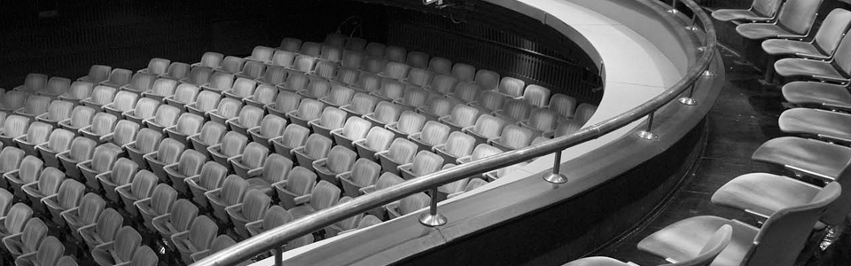

How long will we put up with things that we should not, as long as we seek shelter from violence, as long as we statirati the sale of ideals of our youth? This is the story of his youth, About us, about people who want to live differently. The events that preceded us. Although the years pass, in the last decades of our lives, nothing fundamentally has changed. Many generations have meanwhile adults, and everything remains the same.
Theatre Atelje 212
Svetogorska 21, 11000 Belgrade
- 
Plays
-
Trst
Finally, after so many years, sincere, melancholy-sad-tragic-comic story of a great love of Trieste, and great love in Trieste, take the stage for several generations which this city is celebrated the most important moments in life.
Whole play takes place at the "Savoy" in the center of Trieste, today, in whose luxury rooms in a variety of ways to end the story started in the town many decades ago. -
Pazarni dan
In a society full of imagined and calculated politicians and ideologues, people who sell their lights and mercilessly and peanuts, it amounts to the markets, and quite poor on the margins of society, those whom life has not pardoned, passionately, at the cost of all suffering, and even life, advocate for vague political ideas disposable society of happy and happy people.
-
Pazarni dan
In a society full of imagined and calculated politicians and ideologues, people who sell their lights and mercilessly and peanuts, it amounts to the markets, and quite poor on the margins of society, those whom life has not pardoned, passionately, at the cost of all suffering, and even life, advocate for vague political ideas disposable society of happy and happy people.
-
Dokle
How long will we put up with things that we should not, as long as we seek shelter from violence, as long as we statirati the sale of ideals of our youth? This is the story of his youth, About us, about people who want to live differently. The events that preceded us. Although the years pass, in the last decades of our lives, nothing fundamentally has changed. Many generations have meanwhile adults, and everything remains the same.
-
Trst
Finally, after so many years, sincere, melancholy-sad-tragic-comic story of a great love of Trieste, and great love in Trieste, take the stage for several generations which this city is celebrated the most important moments in life.
Whole play takes place at the "Savoy" in the center of Trieste, today, in whose luxury rooms in a variety of ways to end the story started in the town many decades ago. -
Terapija
The people of modern times in all ways try to be happy. Too many expectations lead to big disappointments and the brutal problems. A major problem is that people think that only stories can solve everything.
However, the story does not solve anything.